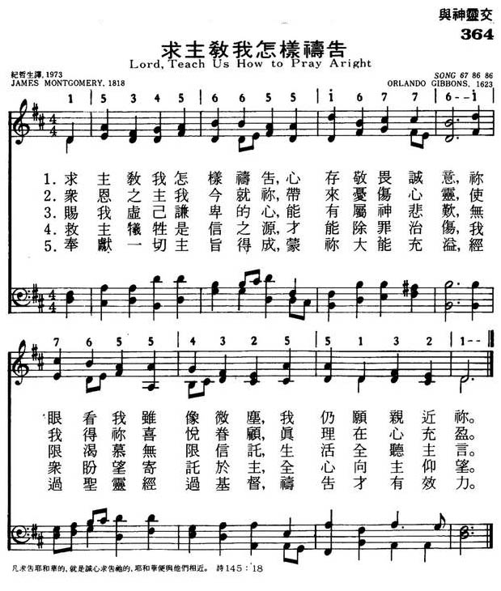

|
|
|
|
1 Lord, teach us how to pray aright 2 We perish if we cease from pray'r; 3 Give deep humility; the sense 4 Faith in the only sacrifice 5 Give these, and then your will be done; |
364求主教我怎样祷告
1.求主教我怎样祷告，心存敬畏诚意，
你眼看我虽像微尘，我仍愿亲近你。 2.众恩之主我今就你，带来忧伤心灵， 是我得你喜悦眷顾，真理在心充盈。 3.赐我譃已谦卑的心，能有属神悲欢， 无限渴慕无限信托，生活全听主言。 4.救主牺牲是信之源，才能除罪治伤， 我众盼望寄托于主，全心向主仰望。 5.奉献一切主旨得成，蒙你大能充溢， 经过圣灵经过基督，祷告才能效力。 |
|
https://www.mred365.cn/szxg/7367.html
 https://hymnary.org/hymn/WSH1972/page/459 SONG 67 Lord, from the Depths to You I Cry
|
|
|
|
|

LX1898
Lord, Teach Us How To
Pray Aright
364求主教我怎样祷告
| Text: | Lord, Teach Us How to Pray Aright |
| Author: | James Montgomery |

Notes
Lord, teach us how to pray aright. J. Montgomery. [Praye.] Written in 1818, and first printed on a broadsheet with Montgomery's "Prayer is the soul's sincere desire;“ “What shall we ask of God in prayer?" and "Thou, God, art a consuming fire ;" for use in the Nonconformist Sunday Schools in Shef¬field. In Cotterill's Selection, 8th ed., 1819, No. 280, it was repeated in full in 4 stanzas of 8 lines, and headed, "The preparations of the heart in man." During the same year it was given, with alterations and the omission of stanza ii., in E. Bickersteth's Treatise on Prayer. In Montgomery's Christian Psalmist, 1825, No. 482, the text in Bickersteth was repeated, with the restoration of stanza ii., and divided into 8 stanzas of 4 lines The text in his Original Hymns, 1853, No. 65, is that of the Christian Psalter, 1825, with the change of stanza iv., lines. 1, 2, from:—
"God of all Grace, we come to Thee
With broken, contrite hearts";
to:—
"God of all grace, we bring to Thee
A broken, contrite heart."
This change is set down in the margin of Montgomery's private copy of the Christian Psalmist in his own handwriting. This hymn, in full or abridged, is in numerous collections. The variations of text which are found have arisen in a great measure from some editors copying from Cotterill's Selection of 1819, and others from the Christian Psalmist of 1825. The first is the original, and the second (with the above correction in Original Hymns 1853) is the authorized text. In some American Unitarian collections, including A Book of Hymns, 1848; and the Hymn [and Tune] Book for the Church and the Home, &c, 1868, a hymn beginning, "God of all grace, we come to Thee," is given from this, and opens with stanza iv.
--John Julian, Dictionary of Hymnology (1907)
Tune Information
| Title: | SONG 67 |
| Harmonizer: | Orlando Gibbons (1623) |
| Meter: | 8.6.8.6 |
| Incipit: | 15345 66551 67761 |
| Key: | D Major |
| Source: | Llyfr y Psalmau, 1621 |
| Copyright: | Public Domain |
| Short Name: | Orlando Gibbons |
| Full Name: | Gibbons, Orlando, 1583-1625 |
| Birth Year: | 1583 |
| Death Year: | 1625 |
Orlando Gibbons (baptised 25 December 1583 – 5 June 1625)
was an English composer, virginalist and organist of the late Tudor and early Jacobean periods. He was a leading composer in the England of his day.
Gibbons was born in Cambridge and christened at Oxford the same year – thus appearing in Oxford church records.
Between 1596 and 1598 he sang in the Choir of King's College, Cambridge, where his brother Edward Gibbons (1568–1650), eldest of the four sons of William Gibbons, was master of the choristers. The second brother Ellis Gibbons (1573–1603) was also a promising composer, but died young. Orlando entered the university in 1598 and achieved the degree of Bachelor of Music in 1606. James I appointed him a Gentleman of the Chapel Royal, where he served as an organist from at least 1615 until his death. In 1623 he became senior organist at the Chapel Royal, with Thomas Tomkins as junior organist. He also held positions as keyboard player in the privy chamber of the court of Prince Charles (later King Charles I), and organist at Westminster Abbey. He died at age 41 in Canterbury of apoplexy, and a monument to him was built in Canterbury Cathedral. A suspicion immediately arose that Gibbons had died of the plague, which was rife in England that year. Two physicians who had been present at his death were ordered to make a report, and performed an autopsy, the account of which survives in The National Archives:
We whose names are here underwritten: having been called to give our counsels to Mr. Orlando Gibbons; in the time of his late and sudden sickness, which we found in the beginning lethargical, or a profound sleep; out of which, we could never recover him, neither by inward nor outward medicines, & then instantly he fell in most strong, & sharp convulsions; which did wring his mouth up to his ears, & his eyes were distorted, as though they would have been thrust out of his head & then suddenly he lost both speech, sight and hearing, & so grew apoplectical & lost the whole motion of every part of his body, & so died. Then here upon (his death being so sudden) rumours were cast out that he did die of the plague, whereupon we . . . caused his body to be searched by certain women that were sworn to deliver the truth, who did affirm that they never saw a fairer corpse. Yet notwithstanding we to give full satisfaction to all did cause the skull to be opened in our presence & we carefully viewed the body, which we found also to be very clean without any show or spot of any contagious matter. In the brain we found the whole & sole cause of his sickness namely a great admirable blackness & syderation in the outside of the brain. Within the brain (being opened) there did issue out abundance of water intermixed with blood & this we affirm to be the only cause of his sudden death.
His death was a shock to peers and the suddenness of his passing drew comment more for the haste of his burial – and of its location at Canterbury rather than the body being returned to London. His wife, Elizabeth, died a little over a year later, aged in her mid-30s, leaving Orlando's eldest brother, Edward, to care for the children left orphans by this event. Of these children only the eldest son, Christopher Gibbons, went on to become a musician.
One of the most versatile English composers of his time, Gibbons wrote a quantity of keyboard works, around thirty fantasias for viols, a number of madrigals (the best-known being "The Silver Swan"), and many popular verse anthems. His choral music is distinguished by his complete mastery of counterpoint, combined with his wonderful gift for melody. Perhaps his most well known verse anthem is This is the record of John, which sets an Advent text for solo countertenor or tenor, alternating with full chorus. The soloist is required to demonstrate considerable technical facility at points, and the work at once expresses the rhetorical force of the text, whilst never being demonstrative or bombastic. He also produced two major settings of Evensong, the Short Service and the Second Service. The former includes a beautifully expressive Nunc dimittis, while the latter is an extended composition, combining verse and full sections. Gibbons's full anthems include the expressive O Lord, in thy wrath, and the Ascension Day anthem O clap your hands together for eight voices.
He contributed six pieces to the first printed collection of keyboard music in England, Parthenia (to which he was by far the youngest of the three contributors), published in about 1611. Gibbons's surviving keyboard output comprises some 45 pieces. The polyphonic fantasia and dance forms are the best represented genres. Gibbons's writing exhibits full mastery of three- and four-part counterpoint. Most of the fantasias are complex, multisectional pieces, treating multiple subjects imitatively. Gibbons's approach to melody in both fantasias and dances features a capability for almost limitless development of simple musical ideas, on display in works such as Pavane in D minor and Lord Salisbury's Pavan and Galliard.
In the 20th century, the Canadian pianist Glenn Gould championed Gibbons's music, and named him as his favorite composer. Gould wrote of Gibbons's hymns and anthems: "ever since my teen-age years this music ... has moved me more deeply than any other sound experience I can think of." In one interview, Gould compared Gibbons to Beethoven and Webern:
...despite the requisite quota of scales and shakes in such half-hearted virtuoso vehicles as the Salisbury Galliard, one is never quite able to counter the impression of music of supreme beauty that lacks its ideal means of reproduction. Like Beethoven in his last quartets, or Webern at almost any time, Gibbons is an artist of such intractable commitment that, in the keyboard field, at least, his works work better in one's memory, or on paper, than they ever can through the intercession of a sounding-board.
To this day, Gibbons's obit service is commemorated every year in King's College Chapel, Cambridge.
--wikipedia.org
Notes
SONG 67 was published as a setting for Psalm 1 in Edmund Prys's Welsh Llyfr y Psalmau (1621). Erik Routley (PHH 31) suggests that the tune should be ascribed to Prys.
Orlando Gibbons (PHH 167) supplied a new bass line for the melody when it was published with a number of his own tunes in George Withers's Hymnes and Songs of the Church (1623). There it was a setting for the sixty-seventh song (thus the title), a paraphrase of Acts 1:12-26. The tune originally had "gathering" (long) notes at the beginning of each of the four phrases.
A rather sturdy tune, SONG 67 is built on a few melodic motives. Sing in harmony in two broad musical lines rather than four short phrases.
--Psalter Hymnal Handbook, 1988